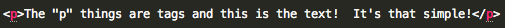
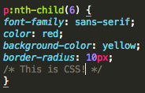

When making a webpage, there are basically two options: create your own webpage from scratch or use someone else's template.
Making a webpage using HTML and CSS is easy. HTML is much like an ordinary word document. You just simply type what you want to type. The only thing that you have to add is a tag:
However, as you can see, creating a webpage from HTML makes it look like a word document and not a webpage. Therefore, you will have to learn some CSS.
As you may have guessed, CSS is the language that makes the webpage beautiful and more like an actual webpage. You can control the color, font size and much more with CSS.
CSS is a bit further away from ordinary language, but it is almost as easy to pick up. You just need to learn a few basic styles, such as "color", "background-color" and "font-size" before you can make a fantastic-looking website.
As for the contents of the webpage, you could either put everything on the webpage:
physics physics physics physics physics physics physics physics physics physics physics physics physics physics physics physics physics physics physics physics physics physics physics physics physics physics physics physics physics physics physics physics physics physics physics physics physics physics physics physics physics physics physics physics physics physics physics ...... or you could make links to the documents on your Google Drive:
The only thing is that you have to make the document public beforehand...
However, if you do not want to make the documents public, you can just tell your students to log in to iLearn before they use the website - this will enable them to view the document even if the document is not made public.
© 2014 Morgan Oliver. All rights reserved.